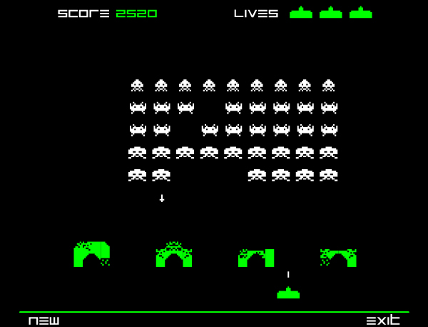

Building Games with Akka FSM
Why Games?
"We've been playing games since humanity had civilization - there is something primal about our desire and our ability to play games"
Jane McGonigal
GameDuell
Bringing people together to have good times with games - Wherever, whenever!
What to expect
- Converting Games to State Machines
- What is Akka
- Writing FSM with Akka
Games
but... which types of games?
Single Player
Multiplayer

Challenges for Multiplayer Games
- Synchronization
- Data Integrity
- Resilient
- Responsive
A game is just a FSM behind the scenes

Not this!!!

Finite-State Machine
Is a mathematical model of computation used to design both computer programs. It is conceived as an abstract machine that can be in one of a finite number of states.
Wikipedia
Rules
- The machine is in only one state at a time
- It can change from one state to another when initiated by a triggering event or condition
- A particular FSM is defined by a list of its states, and the triggering condition for each transition.
- It can have a set of entry and exit actions
Translating Games to FSM
Let's pick a Game
Battleship

What is Akka?
Akka is:
- Open-source toolkit and runtime
- Aims to simplify concurrent and distributed applications
- It supports multiple programming models
- Emphasizes the Actor Model, deeply inspired from the Erlang's Actor Model
- It has both Java and Scala APIs
Actors in General:
Actors are lightweight programmable queues of immutable messages which are processed asynchronously and in a non-concurrent fashion. They can communicate with other actors via immutable messages.
Also known as:Any => Unit
Akka FSM:
A subtype of Actors that model a Finite-State Machine. It's described as a set of relations of:State(S) x Event(E) -> Actions(A), State(S')
A simple Example
//TODO add a sample here!